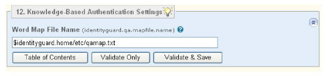

|
IdentityGuard Server 13.0 Administration Guide |
|
IdentityGuard Server 13.0 Administration Guide |
When Entrust IdentityGuard starts up, it looks for the file and location named in the Word Map File Name property. By default, the file is named qamap.txt. Use the following property to change the file name and location. For information about knowledge-based authentication, see Knowledge-based authentication overview. For information about the contents of the word map file, see Edit the map file.

Word Map File Name
identityguard.qa.mapfile.name
Specifies the name and location of the word map file. By default, the file is called qamap.txt.
Default setting:
● on Windows: <$IG_HOME>\etc\qamap.txt
● on Linux: $IG_HOME/etc/qamap.txt
Note: If you add or change the contents of the word map file, you must restart the Entrust IdentityGuard service for the changes to take effect.